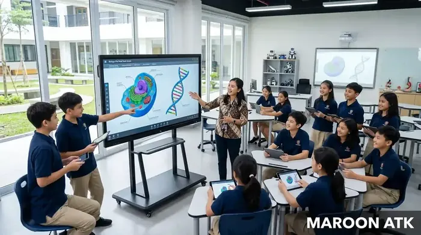
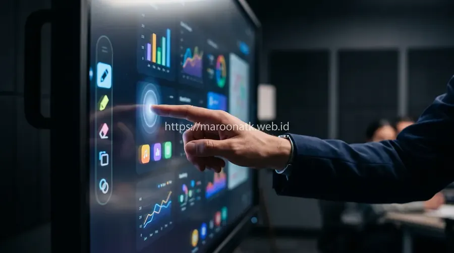
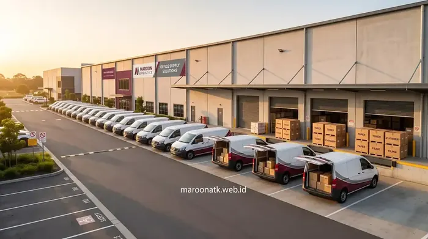
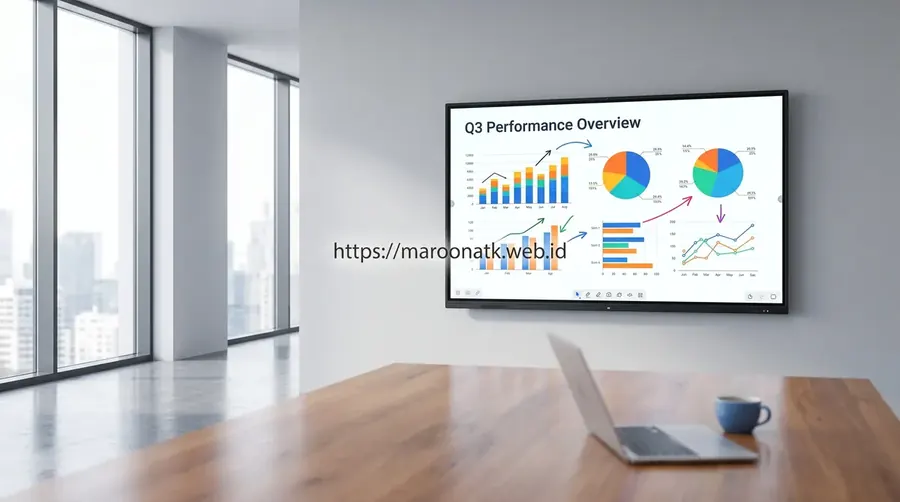
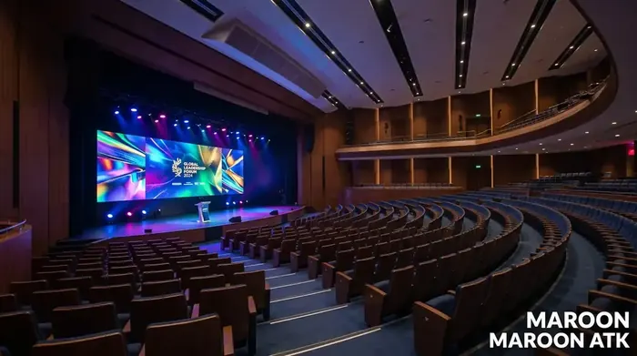

Apa Itu Papan Tulis Digital Smart Board dan Mengapa Dibutuhkan?
Papan tulis digital atau Smart Board adalah perangkat layar interaktif berbasis teknologi multi-touch capacitive display yang memungkinkan pengguna menulis, menggambar, dan mengelola konten presentasi langsung di permukaan layar. Berbeda dari proyektor konvensional, Smart Board mengintegrasikan resolusi 4K UHD, sistem operasi Android/Windows built-in, serta konektivitas Wireless Screen Mirroring dan OPS Slot untuk menghadirkan pengalaman kolaborasi tim yang sesungguhnya dalam satu perangkat terpadu.
Presentasi tim yang monoton menggunakan proyektor buram dengan gambar berbayang dan kabel yang kusut adalah keluhan klasik yang masih sering didengar di banyak kantor Indonesia. Di era kolaborasi digital yang semakin dinamis, pendekatan presentasi pasif seperti itu tidak lagi relevan. Tim yang produktif membutuhkan alat yang bisa merespons interaksi secara real-time—dan itulah tepat di mana papan tulis digital hadir sebagai solusinya.
Maroon ATK (maroonatk.web.id) sebagai vendor dan distributor resmi teknologi interaktif korporat telah membantu puluhan instansi pemerintah, kampus, dan perusahaan swasta dalam mengadopsi ekosistem presentasi modern yang akuntabel secara procurement. Artikel ini adalah panduan teknis komprehensif untuk memahami kategori, spesifikasi, dan cara memilih Smart Board yang tepat sesuai kebutuhan organisasi Anda.

Pengadaan Interactive Flat Panel Sekolah: Transformasi Smart Classroom
Panduan pengadaan IFP untuk sekolah dan institusi pendidikan modern berbasis kurikulum Merdeka Belajar.
Tiga Tipe Utama Papan Tulis Digital yang Wajib Diketahui Tim Procurement
Tidak semua "papan tulis digital" diciptakan sama. Penting bagi tim Purchasing dan General Affairs untuk memahami hierarki teknologi ini sebelum menerbitkan Purchase Order, karena perbedaan spesifikasi akan berdampak langsung pada pengalaman pengguna dan nilai investasi jangka panjang:
1. Non-Touch Writing Pad (Entry Level)
Kategori paling dasar. Perangkat ini berupa tablet digitizer yang terhubung ke komputer atau laptop, mengubah gerakan pena stylus menjadi input digital di layar proyektor atau monitor terpisah. Harga sangat terjangkau (Rp 1–5 juta/unit), namun tidak memiliki layar mandiri dan sangat terbatas untuk sesi presentasi kolaboratif skala tim.
2. Interactive Whiteboard Basic (Mid Level)
Merupakan papan putih besar (60–75 inci) dengan teknologi infrared atau electromagnetic touch yang membutuhkan proyektor eksternal untuk menghasilkan gambar. Konektivitas terbatas pada USB dan HDMI. Cocok untuk anggaran menengah dan penggunaan di ruang kelas atau aula sedang.
3. Smart Board Multi-touch Premium (Korporat)
Inilah standar presentasi korporat modern sesungguhnya. Smart Board premium mengintegrasikan layar LED/LCD 4K built-in (65–86 inci), dukungan 20+ titik sentuh simultan, sistem operasi Android bawaan, Wireless Screen Mirroring dari berbagai perangkat (Android, iOS, Windows, macOS), dan OPS (Open Pluggable Specification) Slot untuk mini-PC internal yang dapat di-upgrade. Estimasi investasi berkisar Rp 25–120 juta per unit tergantung ukuran dan fitur.

Smart Board Multi-touch dengan resolusi 4K UHD dan dukungan 20 titik sentuh simultan untuk ruang meeting korporat yang lebih produktif dan kolaboratif.

Panduan Memilih Supplier ATK Kantor Jakarta Terpercaya Berlegalitas
Kriteria wajib memilih supplier ATK kantor resmi dengan legalitas PT, status PKP, dan e-Faktur PPN 11% yang sah.
Matriks Perbandingan Tipe Papan Tulis Digital
Berikut adalah tabel komparasi teknis yang dapat digunakan sebagai acuan penyusunan Term of Reference (TOR) pengadaan papan tulis digital oleh tim Purchasing:
| Tipe Papan Tulis Digital | Ukuran Layar | Fitur Konektivitas | Kisaran Estimasi Harga |
|---|---|---|---|
| Non-Touch Writing Pad | Tidak ada layar mandiri (terhubung ke monitor/proyektor eksternal) | USB, Bluetooth ke PC | Rp 1 – 5 Juta / unit |
| Interactive Whiteboard Basic | 60 – 75 Inci (butuh proyektor eksternal) | USB, HDMI; tanpa Wireless Cast | Rp 8 – 25 Juta / unit |
| Smart Board Multi-touch (Premium) | 65 – 86 Inci, Layar 4K UHD Built-in | Wireless Cast, USB-C, HDMI 2.0, OPS Slot, Wi-Fi 6, Bluetooth 5.0 | Rp 25 – 120 Juta / unit |

Fitur Wireless Screen Mirroring memungkinkan peserta rapat menampilkan layar laptop atau smartphone langsung ke Smart Board tanpa kabel dalam hitungan detik.

Harga Videotron LED Indoor Terbaru 2026 per m² Terpasang di Jakarta
Panduan estimasi biaya pengadaan dan instalasi videotron LED indoor untuk ruang rapat eksekutif dan lobby kantor.
Fitur Konektivitas Kunci yang Wajib Diperiksa Tim Procurement
Saat menyusun spesifikasi teknis dalam Term of Reference (TOR), tim Purchasing wajib memastikan minimal empat fitur konektivitas berikut terpenuhi pada unit Smart Board yang akan diadakan:
- Wireless Screen Mirroring (Miracast / AirPlay / Google Cast): Memungkinkan pengguna menampilkan layar perangkat mereka secara nirkabel ke Smart Board. Kritis untuk efisiensi jalannya rapat tanpa hambatan teknis koneksi kabel.
- USB-C dengan Power Delivery: Port USB-C modern memungkinkan transmisi video, data, dan pengisian daya laptop sekaligus dalam satu kabel. Standar wajib pada Smart Board kelas korporat 2026.
- OPS (Open Pluggable Specification) Slot: Slot ekspansi standar industri untuk memasang mini-PC Windows secara internal. OPS Slot memungkinkan Smart Board beroperasi sebagai komputer mandiri tanpa perangkat eksternal.
- Wi-Fi 6 & Bluetooth 5.0: Standar jaringan nirkabel terbaru yang menjamin stabilitas koneksi saat multiple perangkat terhubung secara bersamaan dalam satu sesi rapat.
Maroon ATK: Mitra Pengadaan Papan Tulis Digital untuk Instansi & Korporasi
Sebagai vendor resmi berbadan hukum PT dengan layanan pengadaan B2B end-to-end, Maroon ATK (maroonatk.web.id) siap mendukung seluruh tahapan pengadaan interactive flat panel Maroon ATK dan Smart Board untuk keperluan instansi pemerintah, kampus, sekolah, dan perusahaan swasta. Keunggulan layanan Maroon ATK meliputi:
- Penerbitan e-Faktur PPN 11%: Dokumen pajak yang sah untuk kebutuhan akuntansi dan audit internal perusahaan maupun instansi pemerintah.
- SPH Resmi Berkop Perusahaan: Surat Penawaran Harga formal yang memenuhi syarat administrasi e-procurement.
- Unit Demo Sampel Fisik: Tim procurement dapat menguji coba responsivitas layar sentuh dan kualitas gambar secara langsung sebelum penerbitan PO.
- Tim Teknisi Instalasi Internal: Pemasangan wall-mount bracket, kalibrasi touchscreen, dan konfigurasi jaringan ditangani langsung oleh teknisi Maroon ATK di lokasi klien.
- Garansi Resmi 1–3 Tahun: Jaminan purna jual yang mencakup panel layar, sistem elektronik, dan komponen mekanis mounting.
Butuh SPH Resmi Papan Tulis Digital Smart Board?
Konsultasi teknis & demo gratis
Dapatkan konsultasi pemilihan spesifikasi, penyusunan TOR/RAB, dan jadwal demo unit Smart Board langsung dari tim ahli Maroon ATK.
Kesimpulan: Memilih Papan Tulis Digital Smart Board yang Tepat untuk Organisasi Anda
Poin Kunci Pengadaan Papan Tulis Digital
Investasi pada papan tulis digital Smart Board adalah keputusan strategis yang akan meningkatkan efisiensi rapat, kualitas presentasi, dan produktivitas kolaborasi tim secara signifikan jangka panjang.
- Pilih Tipe yang Sesuai Kebutuhan: Smart Board Multi-touch 4K untuk ruang rapat korporat; Interactive Whiteboard Basic untuk aula dan ruang kelas menengah.
- Prioritaskan Konektivitas Lengkap: Pastikan unit memiliki Wireless Cast, USB-C, dan OPS Slot agar investasi tahan masa depan.
- Pilih Vendor Berlegalitas: Pastikan vendor dapat menerbitkan e-Faktur PPN 11%, SPH resmi, dan memiliki tim instalasi internal seperti Maroon ATK.
Pertanyaan Umum (FAQ) Papan Tulis Digital Smart Board
Papan tulis digital Smart Board menggunakan panel LCD/LED multi-touch terintegrasi dengan resolusi minimal Full HD hingga 4K UHD, sementara proyektor konvensional menghasilkan gambar proyeksi pasif tanpa kemampuan sentuh. Smart Board mendukung anotasi real-time, wireless screen mirroring, dan konektivitas OPS Slot untuk mini-PC internal, menjadikannya solusi presentasi all-in-one yang jauh lebih interaktif.
Untuk ruang rapat kapasitas 10–20 orang, ukuran layar 75–86 inci adalah standar optimal. Ruang rapat kecil (5–8 orang) cukup menggunakan layar 65 inci. Untuk auditorium atau ruang pelatihan besar, disarankan layar 86 inci ke atas dengan resolusi 4K UHD agar konten tetap tajam dari jarak jauh.
Ya, Maroon ATK (maroonatk.web.id) menyediakan layanan instalasi end-to-end oleh tim teknisi internal terlatih. Setiap unit Smart Board dilindungi garansi resmi distributor 1–3 tahun, disertai penerbitan e-Faktur PPN 11% dan Surat Penawaran Harga (SPH) resmi berkop perusahaan untuk keperluan e-procurement instansi.